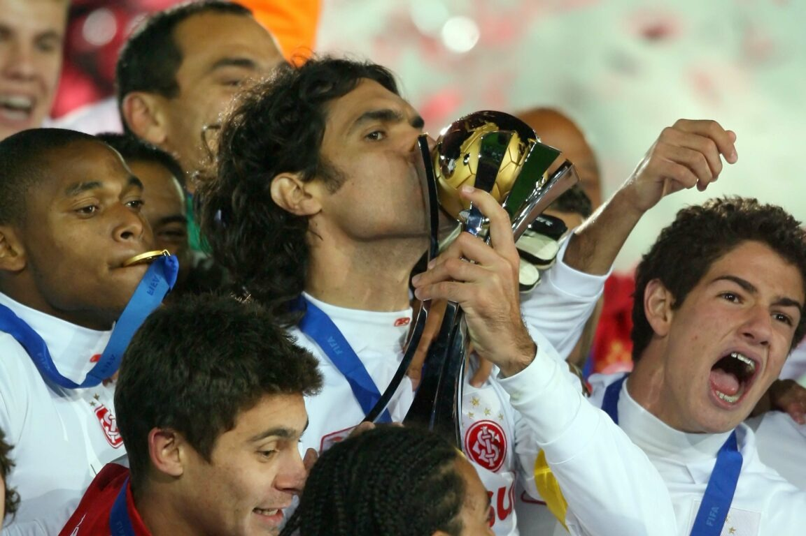
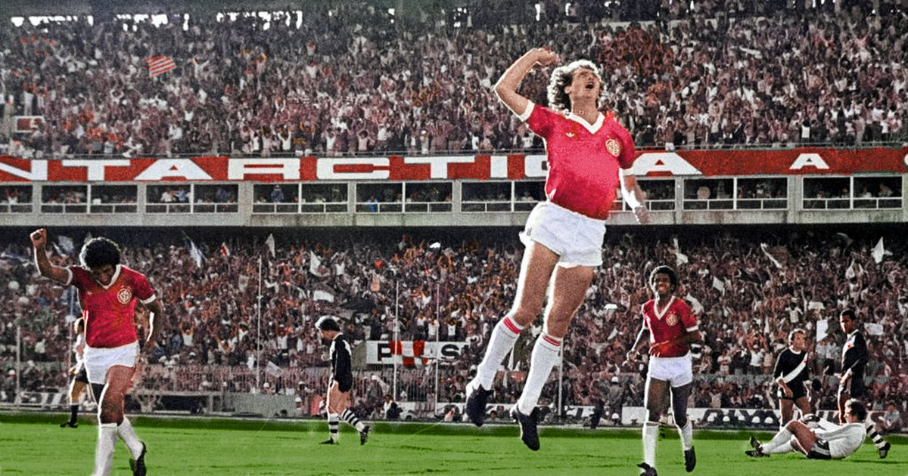
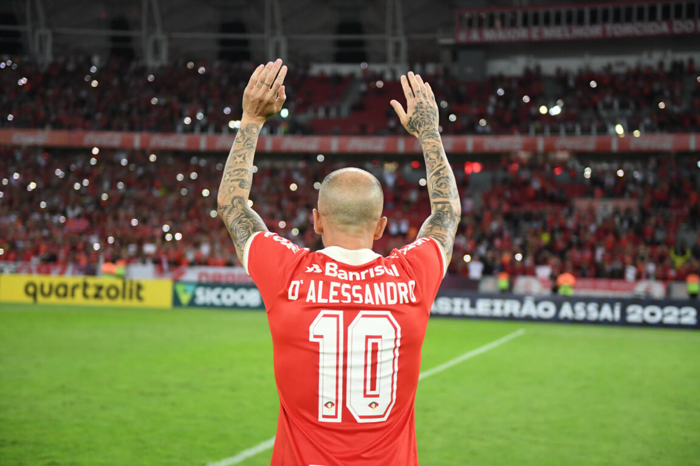

Lendas que Marcaram a História Colorada
O Sport Club Internacional construiu sua grandeza graças a jogadores que marcaram gerações e se eternizaram na memória da torcida. Alguns conquistaram títulos históricos, outros encantaram com seu futebol, mas todos deixaram um legado inesquecível para o clube.
🔴 Fernandão

Considerado por muitos o maior ídolo da história do Internacional, Fernandão foi o capitão das conquistas da Libertadores e do Mundial de Clubes em 2006. Com liderança, inteligência e enorme identificação com a torcida, tornou-se o símbolo máximo de uma das gerações mais vitoriosas do clube.
Além dos títulos, Fernandão conquistou o carinho eterno dos colorados por sua postura dentro e fora de campo. Seu legado continua vivo e seu nome é lembrado como sinônimo de Internacional.
🔴 Paulo Roberto Falcão

Conhecido como o "Rei de Roma", Falcão surgiu no Internacional e foi peça fundamental da equipe que conquistou os Campeonatos Brasileiros de 1975, 1976 e 1979.
Dono de uma visão de jogo excepcional, técnica refinada e liderança natural, é considerado um dos maiores meio-campistas da história do futebol mundial e um dos maiores jogadores já revelados pelo Colorado.
🔴 Andrés D'Alessandro

O argentino Andrés D'Alessandro se tornou um dos maiores símbolos do Internacional no século XXI. Com sua técnica, raça e personalidade marcante, conquistou a torcida desde sua chegada ao clube.
Campeão da Libertadores de 2010 e da Recopa Sul-Americana de 2011, eternizou o famoso drible "La Boba" e construiu uma relação única com os colorados, tornando-se um dos jogadores mais identificados com a história recente do clube.
Quer acompanhar as notícias do Colorado? Acesse o Globo Esporte - Internacional .